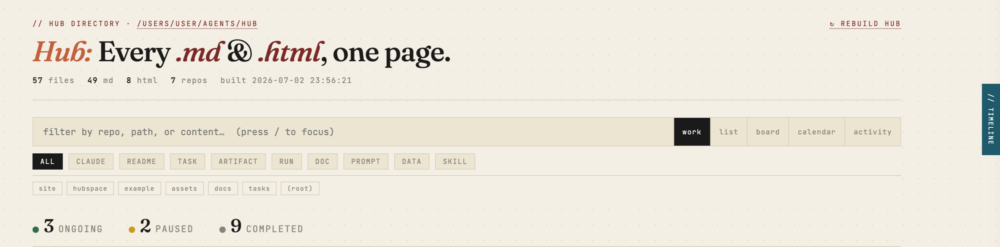

// a record of why, for agent-driven work
Point Hub at a folder — every task, decision, run, and diagram becomes one searchable, traceable page. The manifest records what you decided, what the agent decided, what it found, and the plan; lineage makes that record navigable, so nothing your agent makes floats free. No npm. No framework. Pure stdlib Python — nothing leaves your machine.
Two ways in: pip install hubspaces for the standalone package,
or /plugin install hub@hub for the batteries-included Claude Code plugin (engine
bundled, works offline). Then hub serve — or try it instantly: hub serve --demo.

// trace panel.repo:name prefix.ongoing → completed → paused, persisted.# package — standalone, isolated install pipx install hubspaces cd ~/my-project hub serve # http://localhost:8787, rebuilds on change # plugin — batteries-included for Claude Code (engine bundled, offline) /plugin marketplace add auth-02/hub /plugin install hub@hub /hub:serve # producer skills + the viewer, one install
Configure with a hub.toml (hub init scaffolds one): scan root, port, excluded dirs, default view.